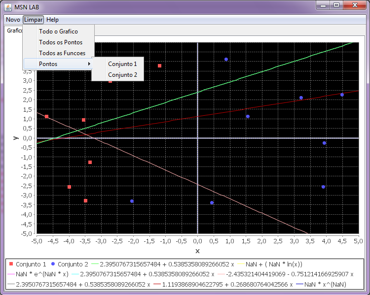
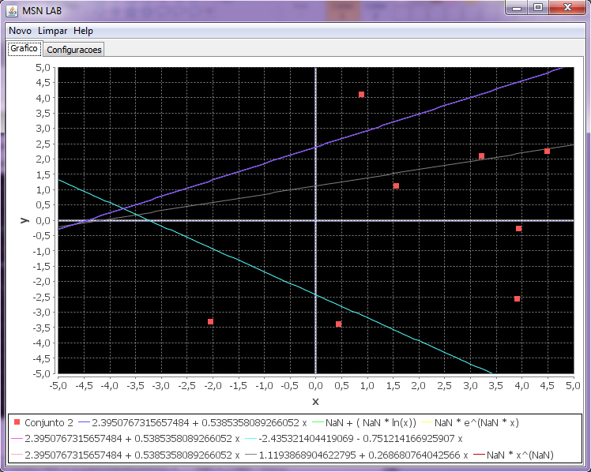

Para limpar todos o elementos do gráfico é necessário apenas clicar no Menu 'Limpar' e logo em seguida em 'Pontos' e escolher quais dos conjuntos de pontos você gostaria de eliminar. O exemplo abaixo simplifica um pouco.

Logo em seguida podemos ver mudança no gráfico, sendo retirado o conjunto 1.
